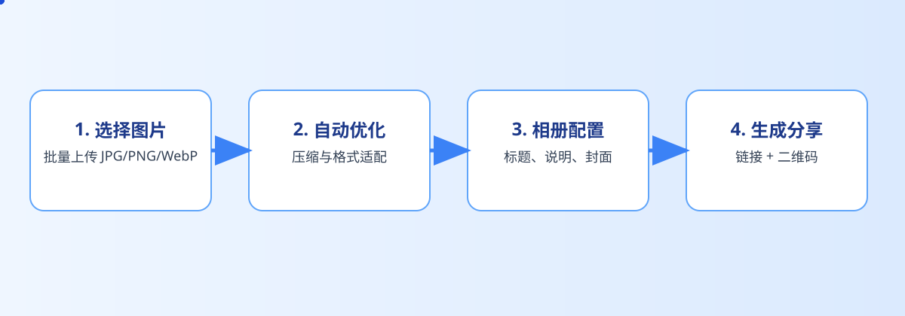

上新路径
先把同系列产品图收成一组，再对外分发
电商素材一旦零散流转，后面很容易变成“各自拿着一套图”。把同一系列产品图收成一个入口，能让运营、客服和渠道至少先站在同一个版本上。

电商产品图的传播范围通常很广，但又常常是阶段性的。上新图、活动图、客服回复图、渠道素材图，如果分发方式不清楚，很容易在团队里形成版本混乱。与其后面不断确认，不如一开始就把入口整理好。
电商运营、客服、内容团队、品牌方，或者需要把一组产品图快速发给多个角色的人。
上新期产品图、活动素材包、客服常用图、渠道分发图等轻量场景。
它更像轻量分发入口，不是完整的 DAM 或多人审批协作系统。
对电商团队来说，最省时间的不是“找更多分发方法”，而是让所有人先认同同一个入口。
提示：下面的流程图和配图都可以点击放大，细节会更清楚。
电商素材一旦零散流转，后面很容易变成“各自拿着一套图”。把同一系列产品图收成一个入口，能让运营、客服和渠道至少先站在同一个版本上。


一些产品图只在活动期或上新期有效，时间一过就不该继续传播。把有效期和失效能力留在手里，会比事后追版本轻松得多。
电商团队最容易耗时间的地方，不是在制作素材，而是在后面不断确认“你拿的是哪一版”。入口先收口，后续的沟通成本会明显下降。


入口清楚以后，运营、客服、内容或渠道拿到的都是同一份入口。这样需要解释的就少了，真正能用的效率才会上来。
链接和二维码在这里出现后，这组产品图就可以被转给不同角色。统一入口的价值，也从这一刻开始体现。


电商图片的时效性很强。把旧图一直放在外面，往往比重新发入口更危险。及时收口，会让团队更少出错。
电商产品图分发真正该优化的，不是消息发得更快，而是让所有需要用图的人拿到同一个清楚入口。